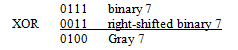

Background Information: According to the Binomial Theorem:
The coefficients of the monomial terms in the expansion of (x + y)5 are the same as the values
on a corresponding row in Yang Hui’s Triangle. Yang Hui’s Triangle can be computed by the
following method.
Start with a row with a single 1
On successive rows, add the numbers directly above and to the left/right together to get
the new value. If a number above in either direction doesn’t exist, substitute a zero for
that missing numbe
programming Problem:
Input: Two positive integers X = 10 and Y= 10.
Output: The sum of X and Y raised to the 5th power.
Example 1: Input: 1 2
Output: 243
Example 2: Input: 10 8
Output: 1889568
Example 3: Input: 4
Output: 161051
PROBLEM #2: Calendar Days
In the 2009 calendar year, we have 365 days spread over 12
months, from January 1st 2009, through December 31st 2009. Your job is to convert from a
cardinal number representation of a date (1-01-2009) to a proper ordinal number representation.
The rules for the proper suffixes for days are as follows:
If a number ends in 1,
If that number is a 1, 21, or 31, append a “st” to it.
If that number is an 11, append a “th” to it.
If a number ends in 2,
If that number is a 2 or a 22, append an “nd” to it.
If that number is a 12, append a “th” to it.
If a number ends in 3,
If that number is a 3 or 23, append a “rd” to it.
If that number is a 13, append a “th” to it.
Programming Problem:
Input: Two positive integers representing valid month/day combinations for the
year 2009. The month is first, followed by the date.
Output: The date, starting with the month, followed by the day as an ordinal
number, followed by the year 2009. All values are separated by one space.
Example 1: Input: 1 2
Output: January 1st 2009
Example 2: Input: 10 8
Output: October 8th 2009
Example 3: Input: 4 7
Output: April 8th 2009
Example 4: Input: 12 12
Output: December 12th 2009
PROBLEM #3: Reversing Strings
Background Information: A palindrome is a word, phrase, or sentence that reads the same
backwards and forwards. For example, the word “radar” is a palindrome. For this problem,
you must write a program that reads a string of characters and prints whether or not the
entire string is a palindrome. Your program should ignore all blanks, numbers,
punctuation and any other non-letter characters, and should be case insensitive
(i.e., it should not care if characters are capital letters or small letters).
For example "5R3a dAr!" should be considered to be a palindrome.
Programming Problem:
Input: One string no greater than 100 characters.
Output: “Yes” if the input string is a palindrome; “No” otherwise.
Example 1: Input: radar
Output: Yes
Example 2: Input: radiar
Output: No
Example 3: Input: Able was I ere I saw Elba!
Output: No
Example 4: Input: Han 258907=-=5748-087-48n123526537….ah256830
Output: Yes
Problem #4: Gray Codes
Background Information: Frank Gray was a physicist and researcher at Bell Labs who was awarded many patents for his work related to televisions in the 1930’s and 1940’s. He is also remembered as the inventor of the Gray code, or reflected binary code, which he patented in 1953 with relation to analog to digital conversion. The Gray code is a binary numeral system often used in electronics, but with many applications in mathematics.
A Gray code is a way of representing binary integers such that successive values differ from each other in only one bit position. To convert binary to Gray code, apply the exclusive or operator bit by bit to the binary value and a right-shifted version of itself, for example:

A right-shifted binary number is one where all the bits have been moved to the right one binary place, with a zero moving into the leftmost binary place and the original rightmost bit disappearing. Gray codes can be produced for N bits. The table below is a four-bit Gray code. Gray codes of 4 bits are more are not unique.
Output: An N-bit table similar to the one shown above. One line per table row must be printed. The formatting of the output should have numbers separated only by a comma. No headers should be printed.
Background Information: In the sport of hockey, each team has their own penalty box.
When a player commits an infraction, they are sent to their team's penalty box for
either 2, 5, or 10 minutes, depending on the severity of their infraction. Immediately after
serving the allotted time, the player is released and let back onto the ice.
Often in penalty-filled contests, penalty boxes can become quite full due to many players
being sent to the penalty box in a short span of time.
During the offseason, a statistically-minded fan decided to try to determine the most players
that could have been in either team's penalty boxes during each game from the previous season
(the most in any one penalty box at a time, not in both). He managed to convert the box
scores from each game, which summarize a game's scoring and penalties, into a format that
lists how many penalties were assessed in a game, and for each penalty, which team it was
on (the home team or visiting team), how long it was for (2, 5, or 10 minutes), and when
it was issued. Unfortunately, his conversion scrambled the order of the penalties so they
no longer are listed in chronological order! He's asked for your help to write a program
to read in his descriptions of a game's penalties and determine the maximum number of
players that could have been in any one penalty box during that game.
In writing your program, you may ignore any issues regarding the physical size of the
penalty boxes or the actual number of players on either team; the penalty boxes are large
enough to fit any number of players, and there are at least as many players on each team
as there are penalties assessed to that team. Finally, you may make no assumptions about
the length of a game due to the possibility of overtimes to settle tie games.
Programming Problem:
Input: The input begins with a single integer N representing the number of games
you are to process. What follows are the descriptions of the penalties for N games.
Each game description begins with an integer M on its own line describing how
many penalties were assessed during that game. M lines follow, each describing
one penalty in the following format: C L T
Where C is a single character, 'h' or 'v', describing
which team the penalty is on. L is an integer describing the penalty length
(2, 5, or 10). T is an integer describing the time that the penalty occurred
as the number of seconds elapsed since the start of the game when the penalty was called.
Output: For each game, output a single number on its own line that represents the maximum
number of players in either team's penalty box.
Sample Input:
3 2 h 2 0 a 2 0 3 h 10 60 a 2 0 h 2 0
3 h 10 120 a 20 h 20